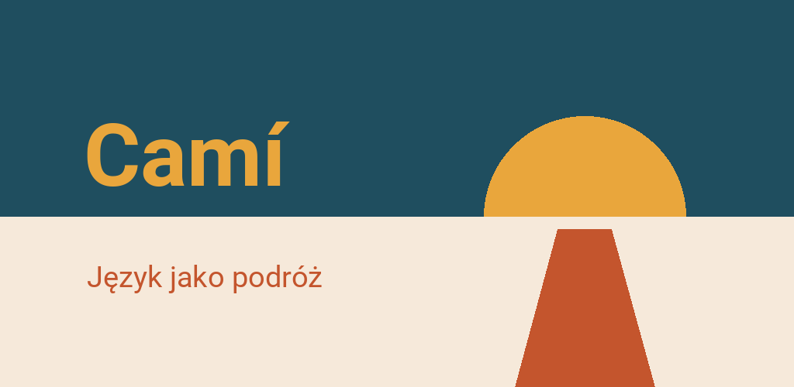

Camí – Nauka języków
Nauka niemieckiego, angielskiego i islandzkiego — offline i bez konta
Na Androida 7 lub nowszego


Camí to aplikacja do nauki języków zbudowana jak podróż. Każdy etap to prawdziwe miejsce: Lubeka nad Bałtykiem, Wiedeń, szkockie Highlands, klify zachodniej Irlandii. Po ukończeniu etapu dostajesz małą nagrodę — przysłowie, przepis, scenkę z tego miejsca albo pocztówkę, która zostaje jako tło aplikacji.
Po polsku: niemiecki, angielski i islandzki
- Niemiecki: północne Niemcy, Alpy, Austria, Szwajcaria — 55 etapów, cały A1 i A2 oraz pierwsze etapy B1 i B2, objaśniane po polsku, z regułami gramatyki pisanymi z myślą o Polakach
- Angielski: Wielka Brytania, Irlandia, Malta, Cypr — 94 etapy od A1 do B2, wszystkie bezpłatne, z regułami, które mówią, czego polszczyzna nie ma: przedimków, Present Perfect, czasów ciągłych
- Islandzki: podróż dookoła wyspy — 37 etapów, cały A1 i pierwsze etapy kolejnych poziomów, od początku objaśniane po polsku
Pozostałe kursy Camí — kataloński, francuski, hiszpański, duński, grecki, chorwacki, włoski, baskijski, koreański i słoweński — są objaśniane w innych językach. Aplikacja i tak je pokazuje i mówi, w jakich językach można się ich uczyć, zamiast je ukrywać. Zmiana języka objaśnień nie kosztuje ani punktu postępu.
Co zawiera
- Dziewięć rodzajów ćwiczeń: wybór, luki, pary, układanie zdań, słuchanie, sortowanie, przekształcanie, czytanie i dialogi — od poziomu A2 luki i dyktanda się wpisuje, a nie wybiera
- Na końcu każdego etapu historia do słuchania: rozmowa miejscowych, czytana linijka po linijce, z pytaniami po drodze
- Ćwiczenia z wymowy: Camí słucha i pokazuje, ile się zgadza (kataloński, angielski, niemiecki, włoski)
- Szkielet gramatyki: każda forma ma swój etap, z regułą, przykładami i działem do sprawdzania
- Karty do powtórek w rosnących odstępach, tworzone z ukończonych lekcji
- Rysowana mapa twojej podróży, z informacjami o każdym regionie
- Test poziomujący, jeśli nie zaczynasz od zera
- Cel dzienny, cel tygodniowy i seria — bez presji czasu i bez traconych żyć
- Dobrowolny ranking z pseudonimem, bez konta
Bez konta, offline
Camí nie wymaga rejestracji. Kursy i mapy są wbudowane; zdjęcia, głosy i pakiet językowy do wymowy przychodzą z kursem z Google Play. Postępy zostają na twoim urządzeniu. Bez reklam, bez śledzenia, bez zakupów. Sama z siebie aplikacja łączy się z internetem tylko wtedy, gdy tego chcesz: gdy dołączasz do rankingu albo wysyłasz błąd przyciskiem „Opinia”.
Wszystko czytają własne, naturalne głosy Camí, we wszystkich językach oprócz baskijskiego. W ustawieniach możesz wybrać zamiast nich głos telefonu.